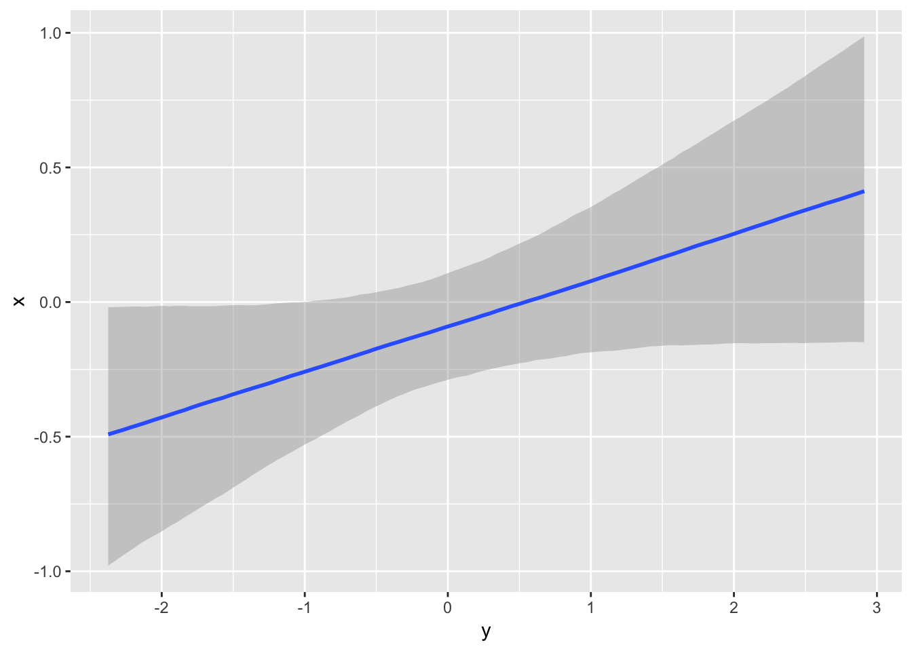

To run jobs on a cluster, you need to use a job scheduler. For this, you need a second package future.batchtools. Further, you need to copy a template file for job scripts to the server.
library("future")
library("listenv")
library("future.batchtools")
library(debugme)
Sys.setenv(DEBUGME='batchtools')
library(batchtools)
## Set up access to remote login node
# login_vpn <- tweak(remote, workers = "rarslan@login.gwdg.de") # doesn't work because R not installed
login <- tweak(remote, workers = "gwdu102.gwdg.de", user = 'rarslan')
bsub <- tweak(batchtools_lsf, template = 'lsf.tmpl',
# workers = "export LSF_ENVDIR=/opt/lsf/conf",
resources = list(job.name = 'test1',
log.file = 'blaaa2.log',
queue = 'mpi',
walltime = '1:00',
processes = 4))
## Specify future topology
## login node -> { cluster nodes } -> { multiple cores }
plan(list(
login,
bsub,
multicore
))
# demo("mandelbrot", package = "future", ask = FALSE)
x %<-% {
thost <- Sys.info()[["nodename"]]
tpid <- Sys.getpid()
# set_gwdg_env()
y <- listenv()
for (task in 1:4) {
## (b) This will be evaluated on a compute node on the cluster
y[[task]] %<-% {
mhost <- Sys.info()[["nodename"]]
mpid <- Sys.getpid()
z <- listenv()
for (jj in 1:2) {
## (c) These will be evaluated in separate processes on the same compute node
z[[jj]] %<-% data.frame(task = task,
top.host = thost, top.pid = tpid,
mid.host = mhost, mid.pid = mpid,
host = Sys.info()[["nodename"]],
pid = Sys.getpid())
}
Reduce(rbind, z)
}
}
Reduce(rbind, y)
}
print(x)## task top.host top.pid mid.host mid.pid host pid
## 1 1 gwdu102 8997 dfa015 4389 dfa015 4400
## 2 1 gwdu102 8997 dfa015 4389 dfa015 4413
## 3 2 gwdu102 8997 dfa013 23086 dfa013 23097
## 4 2 gwdu102 8997 dfa013 23086 dfa013 23098
## 5 3 gwdu102 8997 dfa006 5635 dfa006 5646
## 6 3 gwdu102 8997 dfa006 5635 dfa006 5675
## 7 4 gwdu102 8997 dmp053 8015 dmp053 8026
## 8 4 gwdu102 8997 dmp053 8015 dmp053 8039brms is a Bayesian regression modelling software. Because we often run multiple chains in brms to assess convergence and obtain samples, more quickly, parallelisation is beneficial. brms has internal support for futures. By setting its future argument to true, it will run the chains according to plan. Because running such a model can take a lot of time, it is beneficial to offload it to a remote server or cluster.
Also showing a different way to set up the future and pass along globals and packages.
login <- tweak(remote, workers = "gwdu102.gwdg.de", user = 'rarslan')
bsub <- tweak(batchtools_lsf, template = 'lsf.tmpl',
# workers = "export LSF_ENVDIR=/opt/lsf/conf",
resources = list(job.name = 'brms_test',
log.file = 'brms_test.log',
queue = 'mpi',
walltime = '2:00',
processes = 4))
library(brms)
## Specify future topology
## login node -> { cluster node (compile brms model) } -> { run chains on multiple cores }
plan(list(
login,
bsub,
multicore
))
mydata = data.frame(x = rnorm(100), y = rnorm(100))
model_name <- "mydata_model.rds"
fit2 %<-% { # retrieve the model if it has been fit already
if (file.exists(model_name))
readRDS(model_name)
}
if (is.null(fit2)) {
fit2 %<-% { # login to tardis
model %<-% { # qsub
message(model_name)
brm(x ~ y,
data = mydata,
chains = 4,
future = TRUE #multicore
)
}
saveRDS(model, file = model_name) # in case we lose the connection, save the result
model
}
}
# but the program will wait for it
fit2## Family: gaussian
## Links: mu = identity; sigma = identity
## Formula: x ~ y
## Data: mydata (Number of observations: 100)
## Samples: 4 chains, each with iter = 2000; warmup = 1000; thin = 1;
## total post-warmup samples = 4000
## ICs: LOO = NA; WAIC = NA; R2 = NA
##
## Population-Level Effects:
## Estimate Est.Error l-95% CI u-95% CI Eff.Sample Rhat
## Intercept -0.09 0.10 -0.29 0.11 3263 1.00
## y 0.17 0.09 -0.02 0.36 4000 1.00
##
## Family Specific Parameters:
## Estimate Est.Error l-95% CI u-95% CI Eff.Sample Rhat
## sigma 1.00 0.07 0.87 1.16 3583 1.00
##
## Samples were drawn using sampling(NUTS). For each parameter, Eff.Sample
## is a crude measure of effective sample size, and Rhat is the potential
## scale reduction factor on split chains (at convergence, Rhat = 1).
## R version 3.4.4 RC (2018-03-08 r74373)
## Platform: x86_64-apple-darwin15.6.0 (64-bit)
## Running under: macOS Sierra 10.12.6
##
## Matrix products: default
## BLAS: /Library/Frameworks/R.framework/Versions/3.4/Resources/lib/libRblas.0.dylib
## LAPACK: /Library/Frameworks/R.framework/Versions/3.4/Resources/lib/libRlapack.dylib
##
## locale:
## [1] en_US.UTF-8/en_US.UTF-8/en_US.UTF-8/C/en_US.UTF-8/en_US.UTF-8
##
## attached base packages:
## [1] stats graphics grDevices utils datasets methods base
##
## other attached packages:
## [1] brms_2.2.0 ggplot2_2.2.1 Rcpp_0.12.16
## [4] batchtools_0.9.8 data.table_1.10.4-3 debugme_1.1.0
## [7] future.batchtools_0.6.0 listenv_0.7.0 future_1.8.0
##
## loaded via a namespace (and not attached):
## [1] Brobdingnag_1.2-4 gtools_3.5.0 StanHeaders_2.17.2
## [4] threejs_0.3.1 shiny_1.0.5 assertthat_0.2.0
## [7] stats4_3.4.4 base64url_1.3 yaml_2.1.18
## [10] progress_1.1.2 globals_0.11.0 pillar_1.2.1
## [13] backports_1.1.2 lattice_0.20-35 glue_1.2.0
## [16] digest_0.6.15 checkmate_1.8.5 colorspace_1.3-2
## [19] htmltools_0.3.6 httpuv_1.3.6.2 Matrix_1.2-12
## [22] plyr_1.8.4 dygraphs_1.1.1.4 pkgconfig_2.0.1
## [25] rstan_2.17.3 xtable_1.8-2 mvtnorm_1.0-7
## [28] scales_0.5.0 brew_1.0-6 tibble_1.4.2
## [31] bayesplot_1.5.0 DT_0.4 shinyjs_1.0
## [34] withr_2.1.2 lazyeval_0.2.1 magrittr_1.5
## [37] crayon_1.3.4 mime_0.5 evaluate_0.10.1
## [40] nlme_3.1-131.1 xts_0.10-1 colourpicker_1.0
## [43] rsconnect_0.8.8 tools_3.4.4 loo_2.0.0
## [46] prettyunits_1.0.2 matrixStats_0.53.1 stringr_1.3.0
## [49] munsell_0.4.3 bindrcpp_0.2 compiler_3.4.4
## [52] rlang_0.2.0 grid_3.4.4 ggridges_0.4.1
## [55] rappdirs_0.3.1 htmlwidgets_1.0 crosstalk_1.0.0
## [58] igraph_1.2.1 miniUI_0.1.1 labeling_0.3
## [61] base64enc_0.1-3 rmarkdown_1.9 gtable_0.2.0
## [64] codetools_0.2-15 inline_0.3.14 abind_1.4-5
## [67] reshape2_1.4.3 markdown_0.8 R6_2.2.2
## [70] gridExtra_2.3 rstantools_1.4.0 zoo_1.8-1
## [73] knitr_1.20 bridgesampling_0.4-0 dplyr_0.7.4
## [76] shinythemes_1.1.1 bindr_0.1.1 shinystan_2.4.0
## [79] rprojroot_1.3-2 stringi_1.1.7 parallel_3.4.4
## [82] coda_0.19-1## R version 3.4.1 (2017-06-30)
## Platform: x86_64-redhat-linux-gnu (64-bit)
## Running under: Scientific Linux 7.3 (Nitrogen)
##
## Matrix products: default
## BLAS/LAPACK: /usr/lib64/R/lib/libRblas.so
##
## locale:
## [1] C
##
## attached base packages:
## [1] stats graphics grDevices utils datasets methods base
##
## loaded via a namespace (and not attached):
## [1] compiler_3.4.1 parallel_3.4.1 listenv_0.7.0 codetools_0.2-15
## [5] digest_0.6.12 globals_0.11.0 future_1.8.0